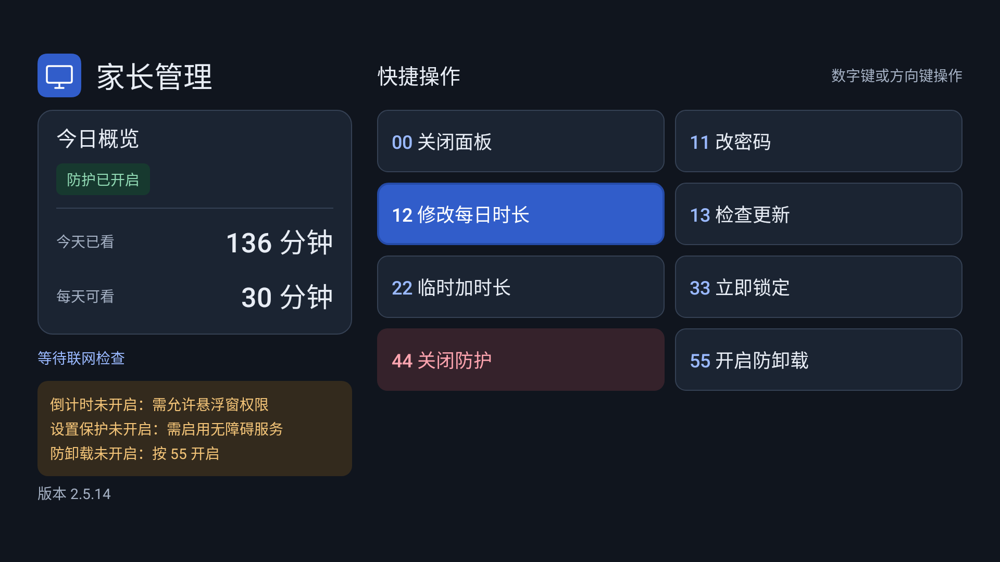
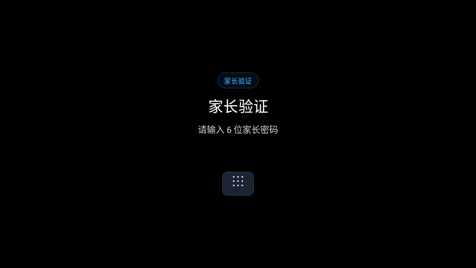
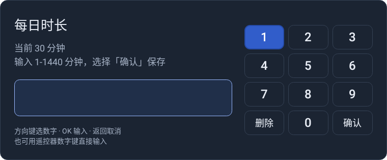
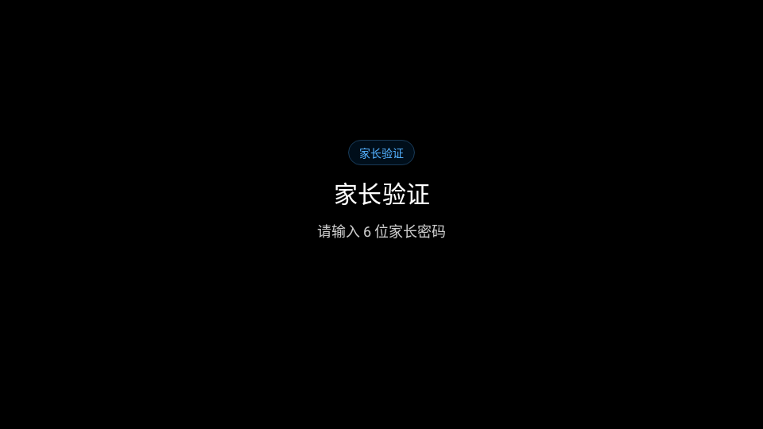
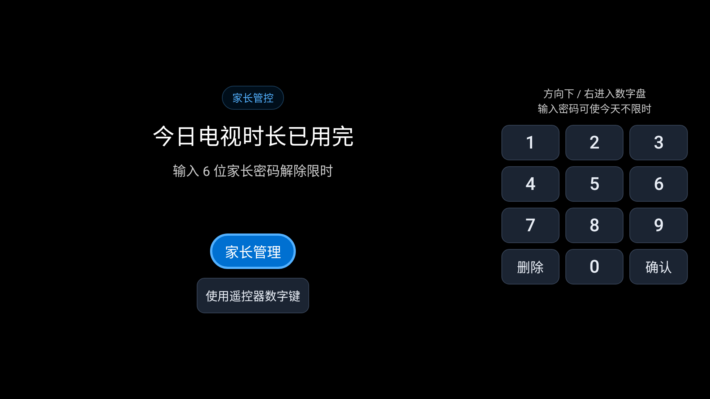

给安卓电视设置每天能看的时长。默认 30 分钟，用完自动锁屏，家长用遥控器管理。





以上截图均为应用原生渲染预览，使用示例数据。
需要 Android 4.4（API 19）及以上，遥控器有方向键、OK 和返回键即可；遥控器没有数字键、或电视报不出数字键时，按屏幕上的数字键盘图标即可展开数字键盘。
000000，再设置自己的 6 位家长密码。应用在电视上运行 HTTP 服务，端口固定为 8888。手机或电脑连接电视所在局域网，用浏览器打开 http://电视IP:8888。
电视锁屏、家长面板和网页统一使用同一个 6 位家长密码，网页登录不再需要账号，旧的独立网页密码不再生效。升级保留电视上已设置的家长密码，不重置额度和使用记录。在「家长密码」页面修改后，电视与网页同时生效，所有旧网页会话退出；网页远程改密也会撤销电视旧授权。首次尚未设置密码时，出厂密码只允许初始化家长密码，不能加时、清零、关闭防护或进入系统设置。
网页菜单沿用电视的操作编号，可查看实时额度与服务状态、修改每日时长、临时加时、立即锁定、关闭或启用防护、清零今天已看，以及修改电视家长密码。00 退出网页，不发放电视家长宽限；11 需再次输入当前电视家长密码。13 检查并下载更新，安装须在电视面板确认；55 在电视打开家长验证，输入密码后按 55 在系统页面确认管理员授权。设备正处于系统锁定任务时，关闭防护须先在电视退出锁定任务，后台会显示原因。
网页保留电视控制、观看设置、家长密码和系统管理四页。家长密码只有一套；手机密码输入框使用数字键盘、遮罩显示，完整验证后才建立网页登录会话。
关闭计时防护后网页服务继续运行，可以远程启用防护。网页每 5 秒同步状态，平时不显示同步文案，仅在失败时提示；登录失败有冷却，网页登录不会自动解除锁屏或放行电视设置。HTTP 登录信息在局域网内传输，请在可信网络使用，不要把这个端口直接映射到公网。
进入家长面板后，用方向键选择操作、按 OK 执行；有数字键的遥控器也可直接输入两位快捷码。
| 快捷码 | 操作 | 说明 |
|---|---|---|
00 | 返回电视 | 退到电视机桌面，不改变防护状态；与返回键同一条出路 |
11 | 改密码 | 再次验证后设置新密码 |
12 | 修改每日时长 | 每天 1–1440 分钟 |
13 | 检查更新 | 下载并安装正式版更新 |
22 | 临时加时长 | 只加今天，每天累计最多 60 分钟 |
33 | 立即锁定 | 马上锁屏，重新按当天额度限时 |
44 | 关闭防护 | 确认后停止管控，保留时长和密码 |
55 | 开启防卸载 | 仅系统支持且有授权页时显示；启用设备管理员，增加直接卸载限制，仍需设置保护 |
99 | 启用防护 | 恢复普通管控，仅停用时显示 |
77 | 清零今天已看 | 把今天已看归零，每日额度与临时加时一个不动；正在锁屏就随之解除 |
InputDevice 的数字键能力合并判断——各设备报告的普通数字键与小键盘数字键并集覆盖 0–9，就只用遥控器直接输入，屏幕上既没有数字盘也没有图标；并集缺一字或检测结果未知时，不再自动摊开一块数字盘，而是在输入区下方留一个数字键盘图标，不按电视或遥控器品牌判断。tvguard_remote 记下 physical_digits_seen，此后连图标都不再出现。屏幕数字盘自己产生的按键和虚拟设备不算证据。tvguard_remote 里的 show_keypad、pad_pinned 在升级后第一次读取时被清掉，不会把数字盘留在屏幕上。2.5.14 进一步把「检测不出来就铺一屏数字盘」改成图标：数字盘还在，但只在你按它的时候出现。2.6.11 起锁屏不再显示「家长管理」按钮，默认聚焦密码输入区，直接用遥控器数字键输入；无数字键时从图标打开屏幕数字键盘。输满正确的 6 位家长密码即进入家长面板，不必再按确认或重复验证。空确认、未输完整、输错密码均不能进入面板。2.6.4 起，正确的已配置家长密码通过后立即解除本次锁定并打开管理面板，无需再退出面板。每日额度、今天已看和临时加时均不改动。输错、未输完、取消验证或网页登录不能解除电视锁定；出厂密码只用于设置新密码，保存新密码本身不解除锁定。
家长从锁屏验证成功后获得的放行，在待机、再次选择 33 立即锁定、跨到新一天或断电重开时结束；退出面板只保留已有放行，不再新发放。期间亮屏观看仍计入今天已看。2.6.10 起，选择加时、修改每日时长或清零后也结束旧放行，后续必须按新额度到时锁定；关闭再启用防护不能继承旧放行。自动到时锁定与手动锁定一样撤销旧会话和未完成输入，待机撤销设置授权，离开锁屏清除半截密码。待机结束后按当天额度判断是否锁定；新一天恢复每日额度。额度尚未用尽时普通登录不会推迟之后的额度锁。
设置页是另一条规则（2.5.18）：进入已识别的设置、应用详情或卸载页面要输入家长密码，而本次开机里最近一次正确密码之后的两分钟内不用再输。密码输错不换窗口，改密码这一步要先把旧密码输对，两分钟从最近一次成功输入重新起算，电视断电重开就归零。2.5.19 把这条规则补完：这两分钟只是一张入场券，家长输对密码之后一直停在设置菜单里操作，就不会在两分钟那一刻被重新弹回密码页——只要前台还是已识别的设置页面，这次访问本身就是通行证。走出设置菜单，通行证当场作废；按遥控器关机或待机、面板里 33 立即锁定、跨到新一天、断电重开也都把它花掉；假如拦截服务被系统回收、再没有人报告过设置页面，那条记录五分钟后自己过期，不会把菜单一直敞着。宽限与这条通行证各管各的：宽限只管锁屏，通行证只管设置页，所以家长退出面板后额度用尽的锁屏不会再抢前台，而停在设置菜单里也照样挡不住用尽的额度。
面板第五行新增 77 清零今天已看：按 OK 立刻把今天已看归零，不再二次确认。它是给家长自己用的——在这台真电视上用真遥控器验收，一旦测试跑到额度用尽，锁屏就把整晚占住，那 30 分钟是全家真实的观看时间。清零只动「今天已看」这一个数字：每日额度、临时加时、锁定规则与计时口径都不变，清零后右上角立刻显示完整的一天，正在挂着的锁屏因为额度重新完整而自动解除；再往后看的每一分钟照常计入。它躲在家长会话后面，孩子在面板上按不到。
community-debug 包不能覆盖正式版。33 立即锁定、跨新一天或断电都当场结束它，没人再报告设置页面时五分钟后自己过期。只有家长验证页或管理面板正在屏幕上、或短时维护授权期间，拦截服务才不动手，因此不会出现「输入密码后又被要求输入密码」的循环。另一条让步是家长从锁屏验证成功后立即获得的放行：到待机、33 立即锁定、新一天或断电之前锁屏不再抢前台，但这段时间照常计入今天已看，额度一个不多，且它不再放行设置页——设置页只看那两分钟和这次访问。2.6.4 起在锁屏输入正确的已配置家长密码会立即解除本次锁定，时长数值不变；管理面板按 33 立即锁定 重新锁屏并花掉这次宽限。面板的 77 清零今天已看 只把今天已看归零，每日额度与临时加时不动，清零后正在挂着的锁屏随之解除。55 开启防卸载 是附加保护，仅系统声明支持设备管理员且提供授权页时显示，由家长在系统确认页启用。固件不支持时，电视和网页显示“当前系统不支持开启设备管理员防卸载”，不再提示“按 55 开启”，也不展示开启按钮；已经启用的管理员仍按真实状态显示。管理员仍启用时，系统拒绝直接卸载，但部分设置页可以先停用管理员再卸载；停用后的密码提示不能撤销该操作。因此必须保持设置拦截正常，不能把普通管理员当成系统级密码卸载锁。55。Android 4.4 同样支持设备管理员，但没有系统 Lock Task，不能承诺系统级防绕过。更新由旧版系统安装器确认，不会静默安装。本轮版本为 2.6.12（versionCode 63）：修复不支持设备管理员的固件仍提示开启防卸载的问题，电视和网页同步隐藏不可用入口；已启用状态按实际授权报告。继续保留 2.6.11 的改动：移除锁屏「家长管理」按钮，正确家长密码输满直接进入面板；修复未输完整时提示重复、网页自动轮询无限延长闲置登录的问题。锁定状态下新增全局输入源/HDMI/桌面/播放快捷键拦截，系统音响等系统窗口不再跳过额度锁检查；仍保留电源、音量和密码输入。网页 30 分钟没有成功管理操作便需重新登录，状态自动刷新不续期。继续保留 2.6.10 的统一密码与授权边界修复、端口 8888、默认 30 分钟和原有管理布局。
继续保留 2.6.0 起的跨天恢复与端口 8888 独立网页登录后台：计时服务与持久状态按计费日同步，新一天恢复完整额度，并在重新计满配置的每日额度后锁定；显式「44 关闭防护」仍会保持关闭，需「99 启用防护」恢复。「33 立即锁定」撤销电视已有的家长授权与宽限，旧面板退出不能重新发放宽限；网页等待锁定后的新状态再显示成功，防止旧轮询把“宽限中”显示回来。2.6.2 的锁屏和密码页须完成绘制并持有焦点后才接管黑色遮罩；失焦、停止或可见性续报超时会恢复遮罩，启动请求本身不会露出播放页面。
使用 JDK 17、Android SDK 35 和 Python 3。
./gradlew testDebugUnitTest assembleDebug
python3 -I -B -m unittest discover -s tools -p 'test_*.py' -v
python3 -I -B tools/md_to_html.pyMIT License。管理面板参考 Preline，使用 Android 原生控件实现。
2.6.7 的电视面板默认聚焦「00 返回电视」，首次设置和认证返回均不进入时长编辑；每日默认 30 分钟，只有主动选择 12 才打开修改。77 清零今天已看保持单列按钮宽度，不再占满一行。
2.6.8 将本地放行与系统开机标识绑定，不再仅凭开机时长判断是否重启；同次开机内进程回收继续保留已验证的放行。若设备同时不提供系统开机计数和内核 boot UUID，旧进程的授权不再继承，需重新输入家长密码。首次升级缺少开机绑定的旧授权同样重新验证，密码、每日时长、已看和加时数据不清除。